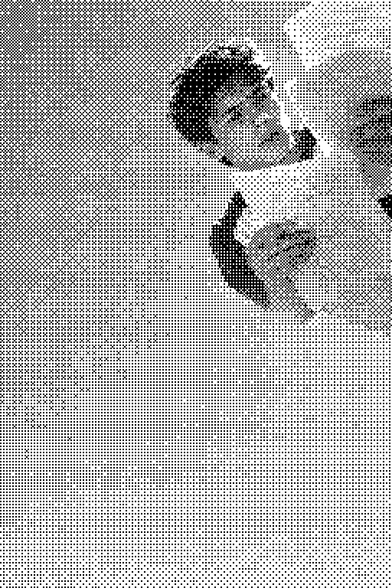
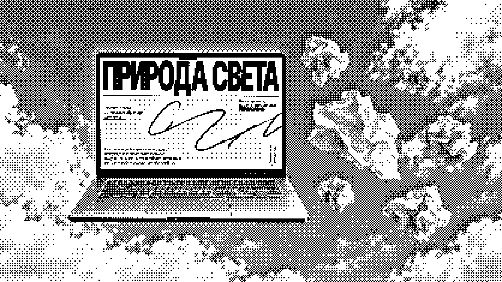
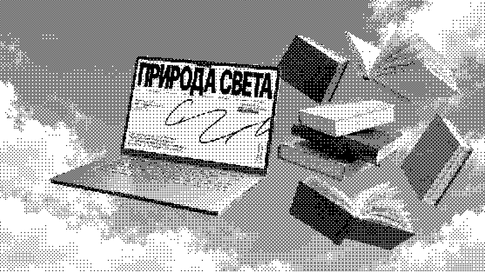
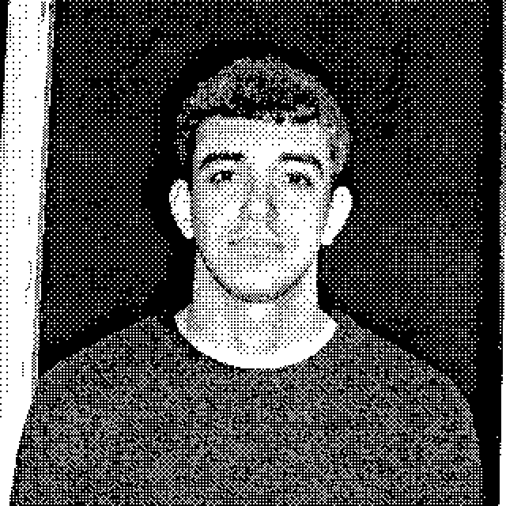
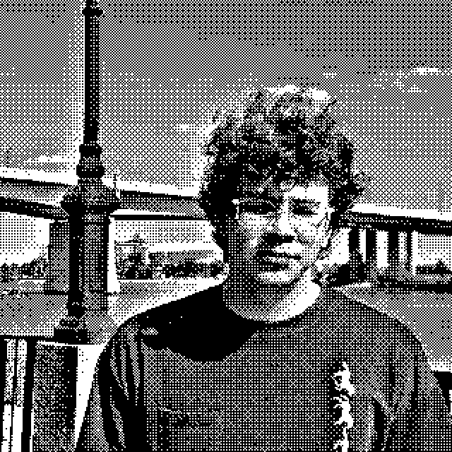
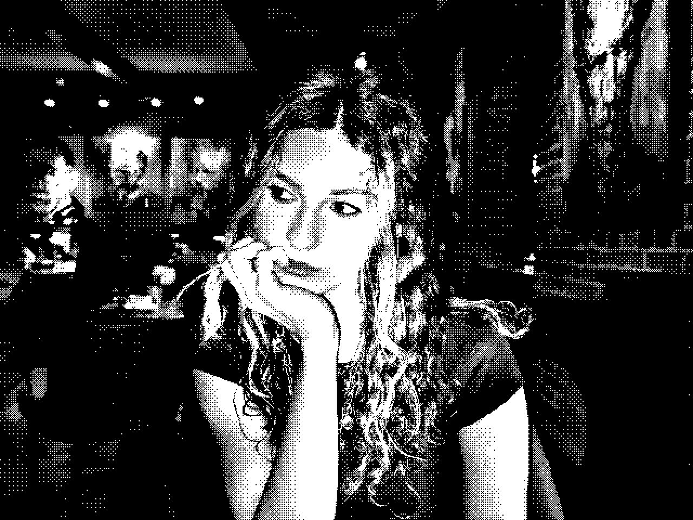

Что такое arcticle?
Исследуй сложный материал: находи нужные фрагменты и разбирайся в них с опорой на исходный текст
Начать изучениеПри изучении сложного материала трудно найти нужное и разобраться в смысле без потери контекста
Что мешает пониманию?
Опрошенные нами студенты и преподаватели сталкиваются с трудностями при чтении статей: им сложно находить нужные фрагменты и разбираться
в непонятных формулировках
-
01

Трудно найти
нужноеПоиск нужного фрагмента усложняют непонятная структура статьи и неточные формулировки
-
02
Нужны
объяснения67% участников наших интервью нужна помощь в понимании сложного текста
-
03

ИИ тоже
ошибаетсяВ ответах встречаются ошибки в фактах, расчётах и ссылках на источники
Что предлагает arcticle
Мы даем нужные фрагменты — а вы сами решаете, где пробежать глазами по верхам, а где провалиться в детали и исследования
Ценность проекта
Вместо универсального саммари пользователь получает навигацию
по документу с учетом своей задачи, объяснением релевантности каждого фрагмента и непосредственным переходом к оригиналу

Мы лишь упростим вам поиск нужного фрагмента
и объясним непонятные моменты
Как устроено чтение
-
01
Загрузите статью и читайте фрагменты, которые arcticle подбирает под ваш вопрос
-
02
Нажмите на интересную мысль или термин, справа откроется панель с глубоким разбором
-
03
Углубитесь в мысль, не переходя на другие источники, если вам недостаточно информации из статьи
Наша команда


